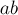
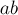
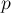

MAXimal
добавлено: 7 Sep 2008 14:40
редактировано: 24 Aug 2011 18:36
Содержание [скрыть]
Декомпозиция Линдона. Алгоритм Дюваля. Нахождение наименьшего циклического сдвига
Понятие декомпозиции Линдона
Определим понятие декомпозиции Линдона (Lyndon decomposition).
Строка называется простой, если она строго меньше любого своего собственного суффикса. Примеры простых строк:  ,
,  , , , , , . Можно показать, что строка является простой тогда и только тогда, когда она строго меньше всех своих нетривиальных циклических сдвигов.
, , , , , . Можно показать, что строка является простой тогда и только тогда, когда она строго меньше всех своих нетривиальных циклических сдвигов.
Далее, пусть дана строка  . Тогда декомпозицией Линдона строки называется её разложение , где строки
. Тогда декомпозицией Линдона строки называется её разложение , где строки  просты, и при этом
просты, и при этом  .
.
Можно показать, что для любой строки это разложение существует и единственно.
Алгоритм Дюваля
Алгоритм Дюваля (Duval's algorithm) находит для данной строки длины  декомпозицию Линдона за время
декомпозицию Линдона за время  с использованием
с использованием  дополнительной памяти.
дополнительной памяти.
Работать со строками будем в 0-индексации.
Введём вспомогательное понятие предпростой строки. Строка  называется предпростой, если она имеет вид , где
называется предпростой, если она имеет вид , где  — некоторая простая строка, а — некоторый префикс строки .
— некоторая простая строка, а — некоторый префикс строки .
Алгоритм Дюваля является жадным. В любой момент его работы строка S фактически разделена на три строки  , где в строке декомпозиция Линдона уже найдена и уже больше не используется алгоритмом; строка — это предпростая строка (причём длину простых строк внутри неё мы также запоминаем); строка — это ещё не обработанная часть строки . Каждый раз алгоритм Дюваля берёт первый символ строки и пытается дописать его к строке . При этом, возможно, для какого-то префикса строки декомпозиция Линдона становится известной, и эта часть переходит к строке .
, где в строке декомпозиция Линдона уже найдена и уже больше не используется алгоритмом; строка — это предпростая строка (причём длину простых строк внутри неё мы также запоминаем); строка — это ещё не обработанная часть строки . Каждый раз алгоритм Дюваля берёт первый символ строки и пытается дописать его к строке . При этом, возможно, для какого-то префикса строки декомпозиция Линдона становится известной, и эта часть переходит к строке .
Опишем теперь алгоритм формально. Во-первых, будет поддерживаться указатель  на начало строки . Внешний цикл алгоритма будет выполняться, пока , т.е. пока вся строка не перейдёт в строку . Внутри этого цикла создаются два указателя: указатель
на начало строки . Внешний цикл алгоритма будет выполняться, пока , т.е. пока вся строка не перейдёт в строку . Внутри этого цикла создаются два указателя: указатель  на начало строки (фактически указатель на следующий символ-кандидат) и указатель
на начало строки (фактически указатель на следующий символ-кандидат) и указатель  на текущий символ в строке , с которым будет производиться сравнение. Затем будем в цикле пытаться добавить символ
на текущий символ в строке , с которым будет производиться сравнение. Затем будем в цикле пытаться добавить символ ![s[j]](../tex2png/cache/6989ece3ad295d18904612384b74598e.png) к строке , для чего необходимо произвести сравнение с символом . Здесь у нас возникают три различных случая:
к строке , для чего необходимо произвести сравнение с символом . Здесь у нас возникают три различных случая:
- Если , то мы можем дописать символ к строке , не нарушив её "предпростоты". Следовательно, в этом случае мы просто увеличиваем указатели и на единицу.
- Если s[k]">, то, очевидно, строка
![s_2 + s[j]](../tex2png/cache/41c524166f504ecda59fdab4ed8e63c5.png) станет простой. Тогда мы увеличиваем на единицу, а передвигаем обратно на , чтобы следующий символ сравнивался с первым символом .
станет простой. Тогда мы увеличиваем на единицу, а передвигаем обратно на , чтобы следующий символ сравнивался с первым символом . - Если , то строка уже не может быть предпростой. Поэтому мы разбиваем предпростую строку на простые строки плюс "остаток" (префикс простой строки, возможно, пустой); простые строки добавляем в ответ (т.е. выводим их позиции, попутно передвигая указатель ), а "остаток" вместе с символом переводим обратно в строку , и останавливаем выполнение внутреннего цикла. Тем самым мы на следующей итерации внешнего цикла заново обработаем остаток, зная, что он не мог образовать предпростую строку с предыдущими простыми строками. Осталось только заметить, что при выводе позиций простых строк нам нужно знать их длину; но она, очевидно, равна .
Реализация
Приведём реализацию алгоритма Дюваля, которая будет выводить искомую декомпозицию Линдона строки :
string s; // входная строка int n = (int) s.length(); int i=0; while (i < n) { int j=i+1, k=i; while (j < n && s[k] <= s[j]) { if (s[k] < s[j]) k = i; else ++k; ++j; } while (i <= k) { cout << s.substr (i, j-k) << ' '; i += j - k; } }
Асимптотика
Сразу заметим, что для алгоритма Дюваля требуется памяти, а именно три указателя , , .
Оценим теперь время работы алгоритма.
Внешний цикл while делает не более итераций, поскольку в конце каждой его итерации выводится как минимум один символ (а всего символов выводится, очевидно, ровно ).
Оценим теперь количество итераций первого вложенного цикла while. Для этого рассмотрим второй вложенный цикл while — он при каждом своём запуске выводит некоторое количество копий одной и той же простой строки некоторой длины . Заметим, что строка является предпростой, причём её простые строки имеют длину как раз , т.е. её длина не превосходит . Поскольку длина строки равна , а указатель увеличивается по единице на каждой итерации первого вложенного цикла while, то этот цикл выполнит не более итераций. Худшим случаем является случай  , и мы получаем, что первый вложенный цикл while всякий раз выполняет не более итераций. Вспоминая, что всего выводится символов, получаем, что для вывода символов требуется не более
, и мы получаем, что первый вложенный цикл while всякий раз выполняет не более итераций. Вспоминая, что всего выводится символов, получаем, что для вывода символов требуется не более  итераций первого вложенного while-а.
итераций первого вложенного while-а.
Следовательно, алгоритм Дюваля выполняется за .
Легко оценить и число сравнений символов, выполняемых алгоритмом Дюваля. Поскольку каждая итерация первого вложенного цикла while производит два сравнения символов, а также одно сравнение производится после последней итерации цикла (чтобы понять, что цикл должен остановиться), то общее число сравнений символов не превосходит .
Нахождение наименьшего циклического сдвига
Пусть дана строка . Построим для строки декомпозицию Линдона (мы можем это сделать за времени и памяти (если не выполнять конкатенацию в явном виде)). Найдём предпростой блок, который начинается в позиции, меньшей (т.е. в первом экземпляре строки ), и заканчивается в позиции, большей или равной n (т.е. во втором экземпляре). Утверждается, что позиция начала этого блока и будет началом искомого циклического сдвига (в этом легко убедиться, воспользовавшись определением декомпозиции Линдона).
Начало предпростого блока найти просто — достаточно заметить, что указатель в начале каждой итерации внешнего цикла while указывает на начало текущего предпростого блока.
Итого мы получаем такую реализацию (для упрощения кода она использует памяти, явным образом дописывая строку к себе):
string min_cyclic_shift (string s) { s += s; int n = (int) s.length(); int i=0, ans=0; while (i < n/2) { ans = i; int j=i+1, k=i; while (j < n && s[k] <= s[j]) { if (s[k] < s[j]) k = i; else ++k; ++j; } while (i <= k) i += j - k; } return s.substr (ans, n/2); }
Задачи в online judges
Список задач, которые можно решить, используя алгоритм Дюваля: